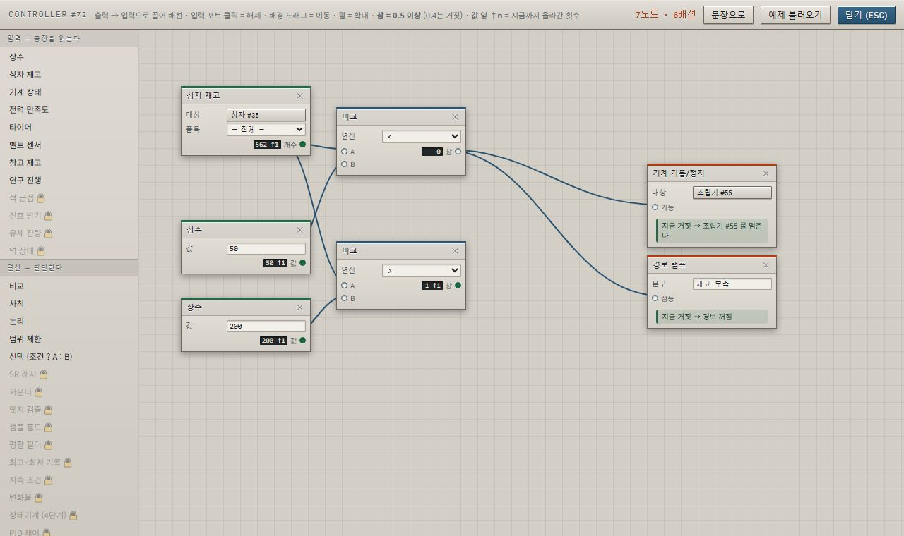
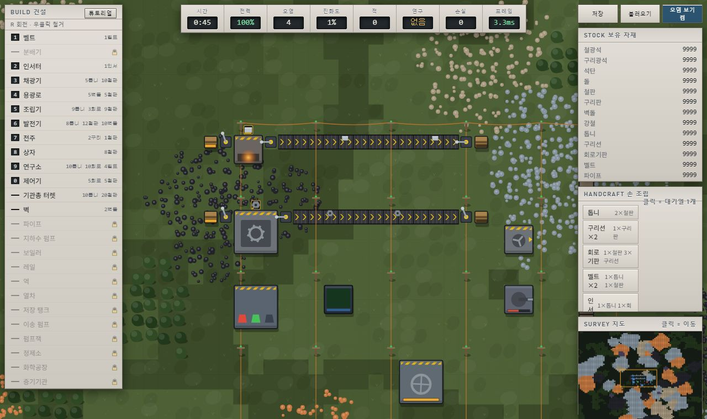
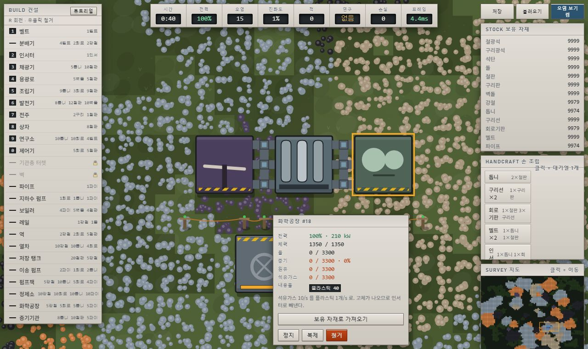
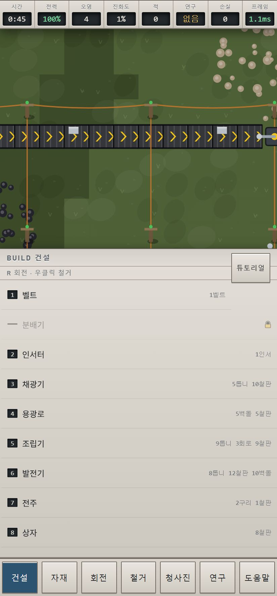

그래서 SR 래치·카운터·PID를 그대로 배선할 수 있다. 전력이 모자랄 때 덜 급한 라인을 먼저 끄는 부하 차단을 짜 보면, 순진하게 배선한 회로가 발진한다 — 끄면 회복되고, 회복되면 켜지고, 켜면 다시 떨어진다. 되먹임 제어를 짤 때 늘 만나는 문제이고, 이 게임에서 가장 배울 것이 많은 지점이다.
코딩을 안 해 봤다면 문장으로도 쓸 수 있다 — 드롭다운을 골라 “재고가 넘치면 기계 쉬게 하기”를 완성하면 그게 그대로 회로가 된다.



주소창 없이 전체화면으로 뜨고, 저장은 기기 안에 남는다. 서버로 아무것도 보내지 않는다.
| 하는 일 | PC | 폰 |
|---|---|---|
| 배치 / 선택 | 좌클릭 · 드래그로 벨트 잇기 | 탭 · 꾹 눌러 자리 잡고 떼면 설치 |
| 철거 | 우클릭 (전액 환급) | [철거] 켜고 탭 |
| 회전 | R | [회전] |
| 같은 건물 하나 더 | Q | 건물을 눌러 뜬 창의 [복제] |
| 연구 · 도움말 | T · H | [연구] · [도움말] |
| 청사진 | B — 영역을 끌어 담고 좌클릭으로 붙인다 | [청사진] |
| 저장 · 불러오기 | F2 · F3 | [자재] 시트 맨 윗줄 |
| 오염 보기 | P | 같은 줄의 [오염 보기] |
게이트가 통과하는 것만으로는 모자란다. 돌연변이 216건은 소스를 일부러 망가뜨려 놓고 그 고장을 실제로 잡는지 확인한다 — 놓친 것 0건. 40분짜리 자력 완주 주행은 게임을 처음부터 끝까지 스스로 깨면서 연구 9종·건물 25종·노드 35종을 전부 밟는다.
가장 많이 고친 것은 게임이 아니라 재는 방법이었다. 실기기 스크린샷이 게이트를 여섯 번 이겼다 — “버튼이 상태를 뒤집는가”는 GREEN인데 사람 눈에는 아무 일도 안 일어나거나, 글자가 두 줄로 접혀도 상자 크기는 그대로라 아무도 못 봤다. 그 이야기는 README에 전부 적어 두었다.